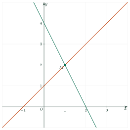
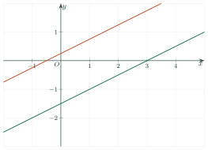

Solving Systems of Linear Equations in Two VariablesGiải hệ hai phương trình bậc nhất hai ẩn
Grade 9 · Topic: Linear Equations and Systems of Linear Equations in Two VariablesLớp 9 · Chủ đề: Phương trình và hệ hai phương trình bậc nhất hai ẩn
1Lesson IntroductionGiới thiệu bài học
Learning goalsMục tiêu bài học
By the end of this lesson you can:
Sau bài học này, em có thể:
describe the steps of the substitution method and of the elimination method;
nêu được các bước của phương pháp thế và phương pháp cộng đại số;
solve a system of two linear equations in two variables by either method;
giải được hệ hai phương trình bậc nhất hai ẩn bằng một trong hai phương pháp;
recognize when a system has a unique solution, no solution or infinitely many solutions;
nhận biết hệ có nghiệm duy nhất, vô nghiệm hay có vô số nghiệm;
check the answer with a calculator and use systems to find a line through two points.
kiểm tra kết quả bằng máy tính cầm tay và dùng hệ phương trình để tìm đường thẳng đi qua hai điểm.
2Mathematical VocabularyTừ vựng Toán học
substitution method – express one variable from one equation and put it into the other equation.
Phương pháp thế – rút một ẩn từ một phương trình rồi thế vào phương trình còn lại.
elimination method – add or subtract the equations to remove one variable.
Phương pháp cộng đại số – cộng hoặc trừ từng vế hai phương trình để mất đi một ẩn.
eliminate – make a variable disappear.
Khử ẩn – làm cho một ẩn biến mất khỏi phương trình.
express \(x\) in terms of \(y\) – write \(x=\dots\) using \(y\).
Biểu diễn \(x\) theo \(y\) – viết \(x=\dots\) bằng một biểu thức chứa \(y\).
unique solution – exactly one solution.
Nghiệm duy nhất – có đúng một nghiệm.
no solution – no pair satisfies both equations.
Vô nghiệm – không có cặp số nào thỏa mãn cả hai phương trình.
infinitely many solutions – every solution of one equation is a solution of the other.
Vô số nghiệm – mọi nghiệm của phương trình này đều là nghiệm của phương trình kia.
opposite numbers – such as \(3\) and \(-3\).
Hai số đối nhau – chẳng hạn \(3\) và \(-3\).
3Useful English PhrasesCụm từ tiếng Anh thường gặp
Solve the system by the substitution method / by the elimination method.
Giải hệ bằng phương pháp thế / bằng phương pháp cộng đại số.
From the first equation, we have \(x=\dots\)
Từ phương trình thứ nhất ta có \(x=\dots\)
Substitute \(\dots\) into the second equation.
Thế \(\dots\) vào phương trình thứ hai.
Add / Subtract the two equations side by side.
Cộng / Trừ từng vế hai phương trình.
Multiply both sides of the first equation by 3.
Nhân hai vế của phương trình thứ nhất với 3.
The system has a unique solution / no solution / infinitely many solutions.
Hệ có nghiệm duy nhất / vô nghiệm / có vô số nghiệm.
4Prerequisite ReviewÔn tập kiến thức nền
Lesson 1. A solution of a system satisfies both equations; it is a common point of the two lines.
Bài 1. Nghiệm của hệ thỏa mãn cả hai phương trình; đó là điểm chung của hai đường thẳng.
Moving a term. When a term moves to the other side, its sign changes: \(x-2y=1\Leftrightarrow x=1+2y\).
Chuyển vế. Khi chuyển một hạng tử sang vế kia thì phải đổi dấu: \(x-2y=1\Leftrightarrow x=1+2y\).
5TheoryLý thuyết
5.1 The substitution methodPhương pháp thế
StepsCác bước
Step 1. From one equation, express one variable in terms of the other (for example \(x\) in terms of \(y\)).
Bước 1. Từ một phương trình của hệ, biểu diễn một ẩn theo ẩn kia (chẳng hạn \(x\) theo \(y\)).
Step 2. Substitute it into the other equation. You get an equation in one variable; solve it.
Bước 2. Thế vào phương trình còn lại để được phương trình một ẩn; giải phương trình đó.
Step 3. Find the other variable and write the solution of the system.
Bước 3. Tìm ẩn còn lại và kết luận nghiệm của hệ.
Tip: choose the equation where a variable has coefficient \(1\) or \(-1\).
Mẹo: nên rút ẩn có hệ số bằng \(1\) hoặc \(-1\).
5.2 The elimination methodPhương pháp cộng đại số
StepsCác bước
Step 1. If needed, multiply both sides of each equation by suitable numbers so that the coefficients of one variable are equal or opposite.
Bước 1. Nếu cần, nhân hai vế của mỗi phương trình với một số thích hợp để hệ số của cùng một ẩn bằng nhau hoặc đối nhau.
Step 2. Subtract the equations (equal coefficients) or add them (opposite coefficients). One variable is eliminated.
Bước 2. Trừ từng vế (hệ số bằng nhau) hoặc cộng từng vế (hệ số đối nhau) để khử ẩn, được phương trình một ẩn.
Step 3. Solve it, find the other variable and write the solution.
Bước 3. Giải phương trình một ẩn, tìm ẩn còn lại và kết luận.
5.3 How many solutions?Số nghiệm của hệ
When we solve, we may get an equation of the form \(0x=k\) (or \(0y=k\)):
Khi giải, có thể gặp phương trình dạng \(0x=k\) (hoặc \(0y=k\)):
| What we getKết quả khi giải | Number of solutionsSố nghiệm của hệ | The two linesHai đường thẳng |
|---|---|---|
| one value of \(x\) and \(y\)tìm được một giá trị \(x\), \(y\) | unique solutionnghiệm duy nhất | intersectcắt nhau |
| \(0x=k\) with \(k\ne0\)\(0x=k\) với \(k\ne0\) | no solutionvô nghiệm | are parallelsong song |
| \(0x=0\)\(0x=0\) | infinitely many solutionsvô số nghiệm | coincidetrùng nhau |

5.4 Using a calculatorDùng máy tính cầm tay
CalculatorMáy tính cầm tay
Choose the mode for systems of two linear equations in two variables, enter \(a, b, c\) of the first equation and \(a', b', c'\) of the second, then press “=” to read \(x\) and \(y\). Use it to check your work, not to skip the method.
Chọn chương trình giải hệ hai phương trình bậc nhất hai ẩn, nhập lần lượt \(a, b, c\) của phương trình thứ nhất và \(a', b', c'\) của phương trình thứ hai, rồi nhấn “=” để đọc \(x\), \(y\). Dùng máy tính cầm tay để kiểm tra kết quả, không thay cho cách giải.
6Worked ExamplesVí dụ có lời giải
ExampleVí dụ 1RememberingBiết – SubstitutionPhương pháp thế
Solve the system \(\begin{cases}x-2y=1\\ 3x+y=10\end{cases}\) by the substitution method.
Giải hệ \(\begin{cases}x-2y=1\\ 3x+y=10\end{cases}\) bằng phương pháp thế.
Analysis: In the first equation \(x\) has coefficient 1, so express \(x\) in terms of \(y\).
Phân tích: Ở phương trình thứ nhất, \(x\) có hệ số 1 nên rút \(x\) theo \(y\).
From the first equation: \(x=1+2y\).
Từ phương trình thứ nhất: \(x=1+2y\).
Substitute into the second: \(3(1+2y)+y=10\Rightarrow 7y=7\Rightarrow y=1\).
Thế vào phương trình thứ hai: \(3(1+2y)+y=10\Rightarrow 7y=7\Rightarrow y=1\).
Then \(x=1+2\cdot1=3\). Check: \(3-2=1\) ✓, \(9+1=10\) ✓.
Suy ra \(x=1+2\cdot1=3\). Thử lại: \(3-2=1\) ✓, \(9+1=10\) ✓.
The solution is \((3;\ 1)\).
Hệ có nghiệm \((3;\ 1)\).
ExampleVí dụ 2UnderstandingHiểu – Elimination (equal coefficients)Cộng đại số (hệ số bằng nhau)
Solve \(\begin{cases}2x+3y=7\\ 2x-y=3\end{cases}\).
Giải hệ \(\begin{cases}2x+3y=7\\ 2x-y=3\end{cases}\).
Analysis: The coefficients of \(x\) are equal (both 2): subtract.
Phân tích: Hệ số của \(x\) bằng nhau (cùng bằng 2): trừ từng vế.
Subtract the equations: \((2x+3y)-(2x-y)=7-3\Rightarrow 4y=4\Rightarrow y=1\).
Trừ từng vế: \((2x+3y)-(2x-y)=7-3\Rightarrow 4y=4\Rightarrow y=1\).
Substitute \(y=1\) into \(2x-y=3\): \(2x=4\Rightarrow x=2\).
Thay \(y=1\) vào \(2x-y=3\): \(2x=4\Rightarrow x=2\).
\((2;\ 1)\).
\((2;\ 1)\).
ExampleVí dụ 3UnderstandingHiểu – Multiply first, then addNhân rồi cộng đại số
Solve \(\begin{cases}3x+2y=4\\ 2x-3y=7\end{cases}\).
Giải hệ \(\begin{cases}3x+2y=4\\ 2x-3y=7\end{cases}\).
Analysis: No coefficients are equal or opposite yet. Multiply to make the coefficients of \(y\) opposite.
Phân tích: Chưa có hệ số nào bằng nhau hay đối nhau. Nhân để hệ số của \(y\) đối nhau.
Multiply the first equation by 3 and the second by 2: \(\begin{cases}9x+6y=12\\ 4x-6y=14\end{cases}\).
Nhân hai vế phương trình thứ nhất với 3, phương trình thứ hai với 2: \(\begin{cases}9x+6y=12\\ 4x-6y=14\end{cases}\).
Add: \(13x=26\Rightarrow x=2\). Then \(3\cdot2+2y=4\Rightarrow y=-1\).
Cộng từng vế: \(13x=26\Rightarrow x=2\). Thay vào: \(3\cdot2+2y=4\Rightarrow y=-1\).
\((2;\ -1)\).
\((2;\ -1)\).
ExampleVí dụ 4Basic applicationVận dụng thấp – No solution, infinitely many solutionsHệ vô nghiệm, hệ có vô số nghiệm
Solve
a) \(\begin{cases}x-2y=3\\ -2x+4y=1\end{cases}\);
b) \(\begin{cases}x+y=2\\ 2x+2y=4\end{cases}\).
Giải các hệ
a) \(\begin{cases}x-2y=3\\ -2x+4y=1\end{cases}\);
b) \(\begin{cases}x+y=2\\ 2x+2y=4\end{cases}\).
Analysis: Eliminate \(x\) and look at what is left.
Phân tích: Khử \(x\) rồi xem phương trình còn lại.
a) Multiply the first equation by 2: \(2x-4y=6\). Add to the second: \(0x+0y=7\), which is never true. No solution (the lines are parallel).
a) Nhân phương trình thứ nhất với 2: \(2x-4y=6\). Cộng với phương trình thứ hai: \(0x+0y=7\), vô lí. Hệ vô nghiệm (hai đường thẳng song song).

a) \(x-2y=3\) and \(-2x+4y=1\) are parallel lines.a) Hai đường thẳng \(x-2y=3\) và \(-2x+4y=1\) song song. b) Multiply the first equation by 2: \(2x+2y=4\), exactly the second equation. Subtracting gives \(0x+0y=0\): infinitely many solutions \((x;\ 2-x)\), \(x\in\mathbb{R}\) (the lines coincide).
b) Nhân phương trình thứ nhất với 2 được \(2x+2y=4\), trùng với phương trình thứ hai. Trừ từng vế được \(0x+0y=0\): hệ có vô số nghiệm \((x;\ 2-x)\), \(x\in\mathbb{R}\) (hai đường thẳng trùng nhau).
a) No solution.
b) Infinitely many solutions \((x;\ 2-x)\).
a) Vô nghiệm.
b) Vô số nghiệm \((x;\ 2-x)\).
ExampleVí dụ 5ApplicationVận dụng – A line through two pointsĐường thẳng đi qua hai điểm
Find \(a\) and \(b\) so that the line \(y=ax+b\) passes through \(A(1;\ 3)\) and \(B(-2;\ -3)\).
Tìm \(a\) và \(b\) để đường thẳng \(y=ax+b\) đi qua hai điểm \(A(1;\ 3)\) và \(B(-2;\ -3)\).
Analysis: A point lies on the line when its coordinates satisfy \(y=ax+b\). Two points give a system in \(a\) and \(b\).
Phân tích: Điểm thuộc đường thẳng khi tọa độ thỏa mãn \(y=ax+b\). Hai điểm cho một hệ phương trình ẩn \(a, b\).
\(A\): \(3=a+b\). \(B\): \(-3=-2a+b\). System \(\begin{cases}a+b=3\\ -2a+b=-3\end{cases}\).
\(A\): \(3=a+b\). \(B\): \(-3=-2a+b\). Ta có hệ \(\begin{cases}a+b=3\\ -2a+b=-3\end{cases}\).
Subtract: \(3a=6\Rightarrow a=2\), then \(b=1\).
Trừ từng vế: \(3a=6\Rightarrow a=2\), suy ra \(b=1\).
\(y=2x+1\).
\(y=2x+1\).
7PracticeBài tập luyện tập
A. Multiple ChoiceA. Trắc nghiệm nhiều lựa chọn
Solve the system \(\begin{cases}-2x-3y=11\\ -3x+y=-11\end{cases}\).
Giải hệ phương trình \(\begin{cases}-2x-3y=11\\ -3x+y=-11\end{cases}\).
Answer: c. The solution is \((2;\ -5)\). Check: both equations are true.
Đáp án c. Nghiệm của hệ là \((2;\ -5)\). Thử lại: cả hai phương trình đều đúng.
To solve the system \(\begin{cases}x-3y=1\\ -2x-y=-1\end{cases}\) by substitution, we first express \(x\) from the first equation. Which expression is correct?
Để giải hệ \(\begin{cases}x-3y=1\\ -2x-y=-1\end{cases}\) bằng phương pháp thế, ta rút \(x\) từ phương trình thứ nhất. Cách rút nào đúng?
Answer: a. Move \(-3y\) to the right-hand side and change its sign.
Đáp án a. Chuyển \(-3y\) sang vế phải và đổi dấu.
How many solutions does the system \(\begin{cases}-x+y=-9\\ 4x+4y=-1\end{cases}\) have?
Hệ phương trình \(\begin{cases}-x+y=-9\\ 4x+4y=-1\end{cases}\) có bao nhiêu nghiệm?
Answer: b. The two lines have different slopes, so they intersect at one point.
Đáp án b. Hai đường thẳng cắt nhau tại một điểm.
B. True or FalseB. Đúng hoặc sai
The system \(\begin{cases}-x-y=3\\ x-y=-1\end{cases}\) has the solution \((2;\ -1)\).
Hệ phương trình \(\begin{cases}-x-y=3\\ x-y=-1\end{cases}\) có nghiệm là \((2;\ -1)\).
False. Solving gives \((-2;\ -1)\).
Sai. Giải hệ được nghiệm \((-2;\ -1)\).
The system \(\begin{cases}x+2y=-5\\ -x-2y=1\end{cases}\) has no solution.
Hệ phương trình \(\begin{cases}x+2y=-5\\ -x-2y=1\end{cases}\) vô nghiệm.
True. The lines are parallel.
Đúng. Hai đường thẳng song song.
C. Short AnswerC. Trả lời ngắn
Solve the system \(\begin{cases}-5x+2y=-29\\ 2x+5y=0\end{cases}\). Write the value of \(x+y\).
Giải hệ phương trình \(\begin{cases}-5x+2y=-29\\ 2x+5y=0\end{cases}\). Ghi giá trị của \(x+y\).
Enter a number.
Nhập một số.
Answer: 3. The solution is \((5;\ -2)\), so \(x+y=3\).
Đáp số: 3. Nghiệm của hệ là \((5;\ -2)\) nên \(x+y=3\).
The line \(y=ax+b\) passes through \(A(3;\ 9)\) and \(B(6;\ 12)\). Find \(a+b\).
Đường thẳng \(y=ax+b\) đi qua \(A(3;\ 9)\) và \(B(6;\ 12)\). Tìm \(a+b\).
Enter a number.
Nhập một số.
Answer: 7. Solve \(\begin{cases}3a+b=9\\ 6a+b=12\end{cases}\): \(a=1,\ b=6\), so \(a+b=7\).
Đáp số: 7. Giải hệ \(\begin{cases}3a+b=9\\ 6a+b=12\end{cases}\): \(a=1,\ b=6\) nên \(a+b=7\).
D1. Self-practice – RememberingD1. Tự luyện – Mức Biết
From the equation \(-3x+y=-3\), express \(y\) in terms of \(x\).
Từ phương trình \(-3x+y=-3\), hãy biểu diễn \(y\) theo \(x\).
Answer: a. \(y=-3+3x\).
Đáp án a. \(y=-3+3x\).
To eliminate \(y\) in the system \(\begin{cases}-4x+2y=8\\ -3x+2y=1\end{cases}\), we should…
Để khử ẩn \(y\) trong hệ \(\begin{cases}-4x+2y=8\\ -3x+2y=1\end{cases}\), ta nên…
Answer: d. The coefficients of \(y\) are equal, so we subtract.
Đáp án d. Hệ số của \(y\) bằng nhau nên ta trừ từng vế.
While solving a system by elimination, we get \(0x=-8\). What can we say about the system?
Khi giải một hệ bằng phương pháp cộng đại số, ta được \(0x=-8\). Kết luận gì về hệ?
Answer: b. \(0x=-8\) is never true, so the system has no solution.
Đáp án b. \(0x=-8\) không bao giờ đúng nên hệ vô nghiệm.
D2. Self-practice – UnderstandingD2. Tự luyện – Mức Hiểu
Solve the system \(\begin{cases}y=3x-6\\ -4x-3y=57\end{cases}\).
Giải hệ phương trình \(\begin{cases}y=3x-6\\ -4x-3y=57\end{cases}\).
Answer: c. Substitute \(y=3x-6\) into the second equation: \(-13x+18=57\Rightarrow x=-3\), then \(y=-15\).
Đáp án c. Thế \(y=3x-6\) vào phương trình thứ hai: \(-13x+18=57\Rightarrow x=-3\), suy ra \(y=-15\).
Solve the system \(\begin{cases}x+3y=9\\ x-3y=-9\end{cases}\).
Giải hệ phương trình \(\begin{cases}x+3y=9\\ x-3y=-9\end{cases}\).
Answer: b. Subtract the equations: \(6y=18\Rightarrow y=3\); then \(x=0\).
Đáp án b. Trừ từng vế: \(6y=18\Rightarrow y=3\); suy ra \(x=0\).
Only one system has no solution. Which one?
Chỉ có một hệ vô nghiệm. Đó là hệ nào?
Answer: c. In the correct system, the second equation is a multiple of the first on the left side only.
Đáp án c. Ở hệ đúng, phương trình thứ hai có vế trái bằng một số lần vế trái phương trình thứ nhất nhưng vế phải thì không.
D3. Self-practice – Basic applicationD3. Tự luyện – Mức Vận dụng thấp
Solve the system \(\begin{cases}3x-3y=-3\\ 4x+5y=32\end{cases}\).
Giải hệ phương trình \(\begin{cases}3x-3y=-3\\ 4x+5y=32\end{cases}\).
Answer: b. Multiply the equations by \(4\) and \(3\) so that the coefficients of \(x\) are equal, then subtract: \(y=4\), \(x=3\).
Đáp án b. Nhân hai phương trình lần lượt với \(4\) và \(3\) để hệ số của \(x\) bằng nhau, rồi trừ từng vế: \(y=4\), \(x=3\).
Find the line \(y=ax+b\) through \(A(3;\ -12)\) and \(B(4;\ -14)\).
Tìm đường thẳng \(y=ax+b\) đi qua \(A(3;\ -12)\) và \(B(4;\ -14)\).
Answer: b. Solve \(\begin{cases}3a+b=-12\\ 4a+b=-14\end{cases}\): \(a=-2,\ b=-6\).
Đáp án b. Giải hệ \(\begin{cases}3a+b=-12\\ 4a+b=-14\end{cases}\): \(a=-2,\ b=-6\).
Solve the system \(\begin{cases}\dfrac{x}{4}+\dfrac{y}{3}=-1\\ x-y=-18\end{cases}\).
Giải hệ phương trình \(\begin{cases}\dfrac{x}{4}+\dfrac{y}{3}=-1\\ x-y=-18\end{cases}\).
Answer: a. Multiply the first equation by \(12\): \(3x+4y=-12\). Then solve: \((-12;\ 6)\).
Đáp án a. Nhân hai vế phương trình thứ nhất với \(12\): \(3x+4y=-12\). Giải hệ được \((-12;\ 6)\).
D4. Self-practice – Advanced applicationD4. Tự luyện – Mức Vận dụng
Find \(m\) so that the system \(\begin{cases}2x+3y=-6\\ mx-6y=13\end{cases}\) has no solution.
Tìm \(m\) để hệ \(\begin{cases}2x+3y=-6\\ mx-6y=13\end{cases}\) vô nghiệm.
Answer: a. No solution means the two lines are parallel: the left side of the second equation is \(-2\) times the left side of the first one, so \(m=-4\); the right sides do not match (\(13\ne -2\cdot(-6)\)).
Đáp án a. Hệ vô nghiệm khi hai đường thẳng song song: vế trái phương trình thứ hai bằng \(-2\) lần vế trái phương trình thứ nhất nên \(m=-4\); vế phải không tương ứng (\(13\ne -2\cdot(-6)\)).
Find \(a, b\) so that the system \(\begin{cases}ax+by=21\\ bx-ay=3\end{cases}\) has the solution \((-3;\ -3)\).
Tìm \(a, b\) để hệ \(\begin{cases}ax+by=21\\ bx-ay=3\end{cases}\) có nghiệm \((-3;\ -3)\).
Answer: b. Substitute \(x=-3,\ y=-3\): \(\begin{cases}-3a-3b=21\\ 3a-3b=3\end{cases}\). Solving gives \(a=-3,\ b=-4\).
Đáp án b. Thay \(x=-3,\ y=-3\): \(\begin{cases}-3a-3b=21\\ 3a-3b=3\end{cases}\). Giải hệ được \(a=-3,\ b=-4\).
Solve the system \(\begin{cases}2(x+1)-y=3\\ x+3(y-1)=8\end{cases}\).
Giải hệ phương trình \(\begin{cases}2(x+1)-y=3\\ x+3(y-1)=8\end{cases}\).
Answer: d. Expand: \(\begin{cases}2x-y=1\\ x+3y=11\end{cases}\). Solving gives \((2;\ 3)\).
Đáp án d. Khai triển: \(\begin{cases}2x-y=1\\ x+3y=11\end{cases}\). Giải hệ được \((2;\ 3)\).
A. Multiple ChoiceA. Trắc nghiệm nhiều lựa chọn
Solve the system \(\begin{cases}-x+2y=-8\\ x+5y=-27\end{cases}\).
Giải hệ phương trình \(\begin{cases}-x+2y=-8\\ x+5y=-27\end{cases}\).
Answer: a. The solution is \((-2;\ -5)\). Check: both equations are true.
Đáp án a. Nghiệm của hệ là \((-2;\ -5)\). Thử lại: cả hai phương trình đều đúng.
To solve the system \(\begin{cases}x-2y=-12\\ 3x-3y=5\end{cases}\) by substitution, we first express \(x\) from the first equation. Which expression is correct?
Để giải hệ \(\begin{cases}x-2y=-12\\ 3x-3y=5\end{cases}\) bằng phương pháp thế, ta rút \(x\) từ phương trình thứ nhất. Cách rút nào đúng?
Answer: b. Move \(-2y\) to the right-hand side and change its sign.
Đáp án b. Chuyển \(-2y\) sang vế phải và đổi dấu.
How many solutions does the system \(\begin{cases}2x-3y=-2\\ 4x-6y=-4\end{cases}\) have?
Hệ phương trình \(\begin{cases}2x-3y=-2\\ 4x-6y=-4\end{cases}\) có bao nhiêu nghiệm?
Answer: d. The second equation is the first one multiplied by 2: the lines coincide.
Đáp án d. Phương trình thứ hai bằng 2 lần phương trình thứ nhất: hai đường thẳng trùng nhau.
B. True or FalseB. Đúng hoặc sai
The system \(\begin{cases}-2x-y=-4\\ -x-4y=12\end{cases}\) has the solution \((4;\ -4)\).
Hệ phương trình \(\begin{cases}-2x-y=-4\\ -x-4y=12\end{cases}\) có nghiệm là \((4;\ -4)\).
True. Solving gives \((4;\ -4)\).
Đúng. Giải hệ được nghiệm \((4;\ -4)\).
The system \(\begin{cases}-3x+y=-4\\ -12x+4y=-13\end{cases}\) has no solution.
Hệ phương trình \(\begin{cases}-3x+y=-4\\ -12x+4y=-13\end{cases}\) vô nghiệm.
True. The lines are parallel.
Đúng. Hai đường thẳng song song.
C. Short AnswerC. Trả lời ngắn
Solve the system \(\begin{cases}x-3y=15\\ -x-4y=20\end{cases}\). Write the value of \(x+y\).
Giải hệ phương trình \(\begin{cases}x-3y=15\\ -x-4y=20\end{cases}\). Ghi giá trị của \(x+y\).
Enter a number.
Nhập một số.
Answer: -5. The solution is \((0;\ -5)\), so \(x+y=-5\).
Đáp số: -5. Nghiệm của hệ là \((0;\ -5)\) nên \(x+y=-5\).
The line \(y=ax+b\) passes through \(A(1;\ -6)\) and \(B(4;\ -18)\). Find \(a+b\).
Đường thẳng \(y=ax+b\) đi qua \(A(1;\ -6)\) và \(B(4;\ -18)\). Tìm \(a+b\).
Enter a number.
Nhập một số.
Answer: -6. Solve \(\begin{cases}a+b=-6\\ 4a+b=-18\end{cases}\): \(a=-4,\ b=-2\), so \(a+b=-6\).
Đáp số: -6. Giải hệ \(\begin{cases}a+b=-6\\ 4a+b=-18\end{cases}\): \(a=-4,\ b=-2\) nên \(a+b=-6\).
D1. Self-practice – RememberingD1. Tự luyện – Mức Biết
From the equation \(-5x+y=-11\), express \(y\) in terms of \(x\).
Từ phương trình \(-5x+y=-11\), hãy biểu diễn \(y\) theo \(x\).
Answer: b. \(y=-11+5x\).
Đáp án b. \(y=-11+5x\).
To eliminate \(y\) in the system \(\begin{cases}-2x+6y=-10\\ -x-6y=0\end{cases}\), we should…
Để khử ẩn \(y\) trong hệ \(\begin{cases}-2x+6y=-10\\ -x-6y=0\end{cases}\), ta nên…
Answer: b. The coefficients of \(y\) are opposite numbers, so we add.
Đáp án b. Hệ số của \(y\) là hai số đối nhau nên ta cộng từng vế.
While solving a system by elimination, we get \(0x=7\). What can we say about the system?
Khi giải một hệ bằng phương pháp cộng đại số, ta được \(0x=7\). Kết luận gì về hệ?
Answer: c. \(0x=7\) is never true, so the system has no solution.
Đáp án c. \(0x=7\) không bao giờ đúng nên hệ vô nghiệm.
D2. Self-practice – UnderstandingD2. Tự luyện – Mức Hiểu
Solve the system \(\begin{cases}y=-3x-2\\ 4x+3y=14\end{cases}\).
Giải hệ phương trình \(\begin{cases}y=-3x-2\\ 4x+3y=14\end{cases}\).
Answer: a. Substitute \(y=-3x-2\) into the second equation: \(-5x-6=14\Rightarrow x=-4\), then \(y=10\).
Đáp án a. Thế \(y=-3x-2\) vào phương trình thứ hai: \(-5x-6=14\Rightarrow x=-4\), suy ra \(y=10\).
Solve the system \(\begin{cases}-4x-4y=-28\\ -4x+5y=8\end{cases}\).
Giải hệ phương trình \(\begin{cases}-4x-4y=-28\\ -4x+5y=8\end{cases}\).
Answer: d. Subtract the equations: \(-9y=-36\Rightarrow y=4\); then \(x=3\).
Đáp án d. Trừ từng vế: \(-9y=-36\Rightarrow y=4\); suy ra \(x=3\).
Only one system has infinitely many solutions. Which one?
Chỉ có một hệ có vô số nghiệm. Đó là hệ nào?
Answer: c. In the correct system, the second equation is a multiple of the first (both sides).
Đáp án c. Ở hệ đúng, phương trình thứ hai bằng một số lần phương trình thứ nhất (cả hai vế).
D3. Self-practice – Basic applicationD3. Tự luyện – Mức Vận dụng thấp
Solve the system \(\begin{cases}4x-5y=-1\\ -6x-3y=-9\end{cases}\).
Giải hệ phương trình \(\begin{cases}4x-5y=-1\\ -6x-3y=-9\end{cases}\).
Answer: b. Multiply the equations by \(-6\) and \(4\) so that the coefficients of \(x\) are equal, then subtract: \(y=1\), \(x=1\).
Đáp án b. Nhân hai phương trình lần lượt với \(-6\) và \(4\) để hệ số của \(x\) bằng nhau, rồi trừ từng vế: \(y=1\), \(x=1\).
Find the line \(y=ax+b\) through \(A(-3;\ 9)\) and \(B(0;\ -3)\).
Tìm đường thẳng \(y=ax+b\) đi qua \(A(-3;\ 9)\) và \(B(0;\ -3)\).
Answer: a. Solve \(\begin{cases}-3a+b=9\\ b=-3\end{cases}\): \(a=-4,\ b=-3\).
Đáp án a. Giải hệ \(\begin{cases}-3a+b=9\\ b=-3\end{cases}\): \(a=-4,\ b=-3\).
Solve the system \(\begin{cases}\dfrac{x}{2}+\dfrac{y}{5}=1\\ x-y=9\end{cases}\).
Giải hệ phương trình \(\begin{cases}\dfrac{x}{2}+\dfrac{y}{5}=1\\ x-y=9\end{cases}\).
Answer: c. Multiply the first equation by \(10\): \(5x+2y=10\). Then solve: \((4;\ -5)\).
Đáp án c. Nhân hai vế phương trình thứ nhất với \(10\): \(5x+2y=10\). Giải hệ được \((4;\ -5)\).
D4. Self-practice – Advanced applicationD4. Tự luyện – Mức Vận dụng
Find \(m\) so that the system \(\begin{cases}2x+y=2\\ mx+2y=5\end{cases}\) has no solution.
Tìm \(m\) để hệ \(\begin{cases}2x+y=2\\ mx+2y=5\end{cases}\) vô nghiệm.
Answer: b. No solution means the two lines are parallel: the left side of the second equation is \(2\) times the left side of the first one, so \(m=4\); the right sides do not match (\(5\ne 2\cdot(2)\)).
Đáp án b. Hệ vô nghiệm khi hai đường thẳng song song: vế trái phương trình thứ hai bằng \(2\) lần vế trái phương trình thứ nhất nên \(m=4\); vế phải không tương ứng (\(5\ne 2\cdot(2)\)).
Find \(a, b\) so that the system \(\begin{cases}ax+by=8\\ bx-ay=14\end{cases}\) has the solution \((2;\ 3)\).
Tìm \(a, b\) để hệ \(\begin{cases}ax+by=8\\ bx-ay=14\end{cases}\) có nghiệm \((2;\ 3)\).
Answer: c. Substitute \(x=2,\ y=3\): \(\begin{cases}2a+3b=8\\ -3a+2b=14\end{cases}\). Solving gives \(a=-2,\ b=4\).
Đáp án c. Thay \(x=2,\ y=3\): \(\begin{cases}2a+3b=8\\ -3a+2b=14\end{cases}\). Giải hệ được \(a=-2,\ b=4\).
Solve the system \(\begin{cases}3(x+1)-y=-6\\ x+4(y-1)=6\end{cases}\).
Giải hệ phương trình \(\begin{cases}3(x+1)-y=-6\\ x+4(y-1)=6\end{cases}\).
Answer: c. Expand: \(\begin{cases}3x-y=-9\\ x+4y=10\end{cases}\). Solving gives \((-2;\ 3)\).
Đáp án c. Khai triển: \(\begin{cases}3x-y=-9\\ x+4y=10\end{cases}\). Giải hệ được \((-2;\ 3)\).
A. Multiple ChoiceA. Trắc nghiệm nhiều lựa chọn
Solve the system \(\begin{cases}-2x-3y=-9\\ -x+2y=-1\end{cases}\).
Giải hệ phương trình \(\begin{cases}-2x-3y=-9\\ -x+2y=-1\end{cases}\).
Answer: c. The solution is \((3;\ 1)\). Check: both equations are true.
Đáp án c. Nghiệm của hệ là \((3;\ 1)\). Thử lại: cả hai phương trình đều đúng.
To solve the system \(\begin{cases}x+y=-4\\ -3x+3y=-3\end{cases}\) by substitution, we first express \(x\) from the first equation. Which expression is correct?
Để giải hệ \(\begin{cases}x+y=-4\\ -3x+3y=-3\end{cases}\) bằng phương pháp thế, ta rút \(x\) từ phương trình thứ nhất. Cách rút nào đúng?
Answer: c. Move \(y\) to the right-hand side and change its sign.
Đáp án c. Chuyển \(y\) sang vế phải và đổi dấu.
How many solutions does the system \(\begin{cases}3x-3y=6\\ -x-2y=-9\end{cases}\) have?
Hệ phương trình \(\begin{cases}3x-3y=6\\ -x-2y=-9\end{cases}\) có bao nhiêu nghiệm?
Answer: a. The two lines have different slopes, so they intersect at one point.
Đáp án a. Hai đường thẳng cắt nhau tại một điểm.
B. True or FalseB. Đúng hoặc sai
The system \(\begin{cases}x+4y=6\\ x+y=3\end{cases}\) has the solution \((2;\ 1)\).
Hệ phương trình \(\begin{cases}x+4y=6\\ x+y=3\end{cases}\) có nghiệm là \((2;\ 1)\).
True. Solving gives \((2;\ 1)\).
Đúng. Giải hệ được nghiệm \((2;\ 1)\).
The system \(\begin{cases}-3x-4y=1\\ 6x+8y=1\end{cases}\) has no solution.
Hệ phương trình \(\begin{cases}-3x-4y=1\\ 6x+8y=1\end{cases}\) vô nghiệm.
True. The lines are parallel.
Đúng. Hai đường thẳng song song.
C. Short AnswerC. Trả lời ngắn
Solve the system \(\begin{cases}x-5y=23\\ -5x+y=5\end{cases}\). Write the value of \(x+y\).
Giải hệ phương trình \(\begin{cases}x-5y=23\\ -5x+y=5\end{cases}\). Ghi giá trị của \(x+y\).
Enter a number.
Nhập một số.
Answer: -7. The solution is \((-2;\ -5)\), so \(x+y=-7\).
Đáp số: -7. Nghiệm của hệ là \((-2;\ -5)\) nên \(x+y=-7\).
The line \(y=ax+b\) passes through \(A(1;\ 3)\) and \(B(5;\ 7)\). Find \(a+b\).
Đường thẳng \(y=ax+b\) đi qua \(A(1;\ 3)\) và \(B(5;\ 7)\). Tìm \(a+b\).
Enter a number.
Nhập một số.
Answer: 3. Solve \(\begin{cases}a+b=3\\ 5a+b=7\end{cases}\): \(a=1,\ b=2\), so \(a+b=3\).
Đáp số: 3. Giải hệ \(\begin{cases}a+b=3\\ 5a+b=7\end{cases}\): \(a=1,\ b=2\) nên \(a+b=3\).
D1. Self-practice – RememberingD1. Tự luyện – Mức Biết
From the equation \(3x+y=10\), express \(y\) in terms of \(x\).
Từ phương trình \(3x+y=10\), hãy biểu diễn \(y\) theo \(x\).
Answer: b. \(y=10-3x\).
Đáp án b. \(y=10-3x\).
To eliminate \(y\) in the system \(\begin{cases}x+2y=-9\\ -3x-2y=11\end{cases}\), we should…
Để khử ẩn \(y\) trong hệ \(\begin{cases}x+2y=-9\\ -3x-2y=11\end{cases}\), ta nên…
Answer: b. The coefficients of \(y\) are opposite numbers, so we add.
Đáp án b. Hệ số của \(y\) là hai số đối nhau nên ta cộng từng vế.
While solving a system by elimination, we get \(0y=5\). What can we say about the system?
Khi giải một hệ bằng phương pháp cộng đại số, ta được \(0y=5\). Kết luận gì về hệ?
Answer: c. \(0y=5\) is never true, so the system has no solution.
Đáp án c. \(0y=5\) không bao giờ đúng nên hệ vô nghiệm.
D2. Self-practice – UnderstandingD2. Tự luyện – Mức Hiểu
Solve the system \(\begin{cases}y=2x+1\\ 3x-2y=-5\end{cases}\).
Giải hệ phương trình \(\begin{cases}y=2x+1\\ 3x-2y=-5\end{cases}\).
Answer: c. Substitute \(y=2x+1\) into the second equation: \(-x-2=-5\Rightarrow x=3\), then \(y=7\).
Đáp án c. Thế \(y=2x+1\) vào phương trình thứ hai: \(-x-2=-5\Rightarrow x=3\), suy ra \(y=7\).
Solve the system \(\begin{cases}3x+3y=15\\ 3x-4y=-6\end{cases}\).
Giải hệ phương trình \(\begin{cases}3x+3y=15\\ 3x-4y=-6\end{cases}\).
Answer: d. Subtract the equations: \(7y=21\Rightarrow y=3\); then \(x=2\).
Đáp án d. Trừ từng vế: \(7y=21\Rightarrow y=3\); suy ra \(x=2\).
Choose the system whose two lines coincide.
Chọn hệ có hai đường thẳng trùng nhau.
Answer: a. In the correct system, the second equation is a multiple of the first (both sides).
Đáp án a. Ở hệ đúng, phương trình thứ hai bằng một số lần phương trình thứ nhất (cả hai vế).
D3. Self-practice – Basic applicationD3. Tự luyện – Mức Vận dụng thấp
Solve the system \(\begin{cases}2x-4y=6\\ 6x+3y=18\end{cases}\).
Giải hệ phương trình \(\begin{cases}2x-4y=6\\ 6x+3y=18\end{cases}\).
Answer: b. Multiply the equations by \(6\) and \(2\) so that the coefficients of \(x\) are equal, then subtract: \(y=0\), \(x=3\).
Đáp án b. Nhân hai phương trình lần lượt với \(6\) và \(2\) để hệ số của \(x\) bằng nhau, rồi trừ từng vế: \(y=0\), \(x=3\).
Find the line \(y=ax+b\) through \(A(-3;\ -11)\) and \(B(-2;\ -8)\).
Tìm đường thẳng \(y=ax+b\) đi qua \(A(-3;\ -11)\) và \(B(-2;\ -8)\).
Answer: c. Solve \(\begin{cases}-3a+b=-11\\ -2a+b=-8\end{cases}\): \(a=3,\ b=-2\).
Đáp án c. Giải hệ \(\begin{cases}-3a+b=-11\\ -2a+b=-8\end{cases}\): \(a=3,\ b=-2\).
Solve the system \(\begin{cases}\dfrac{x}{2}+\dfrac{y}{5}=2\\ x-y=-17\end{cases}\).
Giải hệ phương trình \(\begin{cases}\dfrac{x}{2}+\dfrac{y}{5}=2\\ x-y=-17\end{cases}\).
Answer: d. Multiply the first equation by \(10\): \(5x+2y=20\). Then solve: \((-2;\ 15)\).
Đáp án d. Nhân hai vế phương trình thứ nhất với \(10\): \(5x+2y=20\). Giải hệ được \((-2;\ 15)\).
D4. Self-practice – Advanced applicationD4. Tự luyện – Mức Vận dụng
Find \(m\) so that the system \(\begin{cases}-3x+y=4\\ mx+3y=9\end{cases}\) has no solution.
Tìm \(m\) để hệ \(\begin{cases}-3x+y=4\\ mx+3y=9\end{cases}\) vô nghiệm.
Answer: d. No solution means the two lines are parallel: the left side of the second equation is \(3\) times the left side of the first one, so \(m=-9\); the right sides do not match (\(9\ne 3\cdot(4)\)).
Đáp án d. Hệ vô nghiệm khi hai đường thẳng song song: vế trái phương trình thứ hai bằng \(3\) lần vế trái phương trình thứ nhất nên \(m=-9\); vế phải không tương ứng (\(9\ne 3\cdot(4)\)).
Find \(a, b\) so that the system \(\begin{cases}ax+by=9\\ bx-ay=-7\end{cases}\) has the solution \((1;\ 3)\).
Tìm \(a, b\) để hệ \(\begin{cases}ax+by=9\\ bx-ay=-7\end{cases}\) có nghiệm \((1;\ 3)\).
Answer: a. Substitute \(x=1,\ y=3\): \(\begin{cases}a+3b=9\\ -3a+b=-7\end{cases}\). Solving gives \(a=3,\ b=2\).
Đáp án a. Thay \(x=1,\ y=3\): \(\begin{cases}a+3b=9\\ -3a+b=-7\end{cases}\). Giải hệ được \(a=3,\ b=2\).
Solve the system \(\begin{cases}4(x+1)-y=13\\ x+2(y-1)=-2\end{cases}\).
Giải hệ phương trình \(\begin{cases}4(x+1)-y=13\\ x+2(y-1)=-2\end{cases}\).
Answer: b. Expand: \(\begin{cases}4x-y=9\\ x+2y=0\end{cases}\). Solving gives \((2;\ -1)\).
Đáp án b. Khai triển: \(\begin{cases}4x-y=9\\ x+2y=0\end{cases}\). Giải hệ được \((2;\ -1)\).
8Common MistakesLỗi thường gặp
Forgetting to change the sign when moving a term. \(x-2y=1\Rightarrow x=1+2y\), not \(x=1-2y\).
Quên đổi dấu khi chuyển vế. \(x-2y=1\Rightarrow x=1+2y\), không phải \(x=1-2y\).
Multiplying only one side. Multiply both sides of the equation by the same number.
Chỉ nhân một vế. Phải nhân cả hai vế của phương trình với cùng một số.
Adding when the coefficients are equal. Equal coefficients → subtract; opposite coefficients → add.
Cộng khi hệ số bằng nhau. Hệ số bằng nhau thì trừ; hệ số đối nhau thì cộng.
Stopping after finding one variable. The solution of a system is a pair \((x;\ y)\).
Tìm được một ẩn rồi dừng. Nghiệm của hệ là một cặp số \((x;\ y)\).
Reading \(0x=0\) as “no solution”. \(0x=0\) is always true: infinitely many solutions.
Hiểu \(0x=0\) là vô nghiệm. \(0x=0\) luôn đúng nên hệ có vô số nghiệm.
9Lesson SummaryTổng kết
Substitution: express one variable, substitute, solve, then find the other variable.
Phương pháp thế: rút một ẩn, thế vào phương trình kia, giải rồi tìm ẩn còn lại.
Elimination: make the coefficients of one variable equal or opposite, then subtract or add.
Phương pháp cộng đại số: làm cho hệ số của một ẩn bằng nhau hoặc đối nhau rồi trừ hoặc cộng từng vế.
\(0x=k\ (k\ne0)\): no solution (parallel lines). \(0x=0\): infinitely many solutions (coinciding lines).
\(0x=k\ (k\ne0)\): hệ vô nghiệm (hai đường thẳng song song). \(0x=0\): hệ có vô số nghiệm (hai đường thẳng trùng nhau).
Always check the solution in both equations (or with a calculator).
Luôn thử lại nghiệm vào cả hai phương trình (hoặc bằng máy tính cầm tay).
Key English: substitution method, elimination method, unique solution, no solution.
Thuật ngữ cần nhớ (chạm vào để xem tiếng Anh): phương pháp thế, phương pháp cộng đại số, nghiệm duy nhất, vô nghiệm.